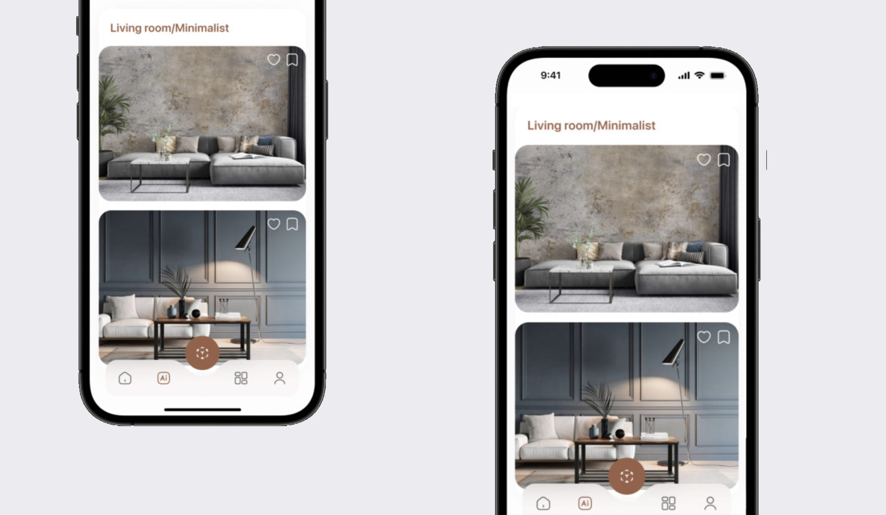

We believe that design is not just about appearance but about creating a deeper connection with our surroundings. That's why we are re-Imagining the future of design through recreating the way we design our homes.
As we aim to transform homes into expressions of self, where every element is in harmony with our deepest needs. It's more than design; it's about enriching lives by ensuring that personal spaces truly reflect those who inhabit them.
Conducting research and synthesizing results to uncover painpoints and needs
In the pursuit of redefining our living spaces, our journey begins with a profound exploration into the hearts and minds of those we design for. We started with an extensive research, engaging with a diverse spectrum of individuals, spanning across different disciplines. Through detailed interviews, observational studies, and a thorough analysis of the current landscape, including competitor strategies and scholarly research on psychological space design, we've delved deep into the essence of personal connection when it comes to our living spaces.
Our methodology was designed, using traditional insights with advanced analytical techniques to uncover the core psychological needs related to personal spaces. This exploration revealed not just preferences, but the intimate relationship between individuals and their environments. It highlighted the longing for spaces that truly resonate with our own personal needs and the challenges faced in achieving such harmony.
Armed with these insights, we are crafting the future of interior design—a future where every home is a mirror to the soul, where spaces are not just built, but born out of the deepest desires of their inhabitants. It's more than a design philosophy; it's a commitment to transforming living spaces into sanctuaries of personal expression and well-being.
Problem & Pain-points
Despite their functionality, homes often fail to deeply connect with our own personal needs. Traditional interior design focuses on aesthetics and trends rather than the unique identities and emotional needs of the individuals who live within these spaces.
Solution
Our project, "The Future of Interior Design," introduces a transformative approach to home environments. By integrating advanced psychological insights with innovative design methodologies, we enable individuals to re-design their living spaces. This process not only tailors every aspect of a home to reflect the personal needs and desires of its inhabitants but also enriches their daily lives by fostering a profound connection between their inner selves and their physical surroundings. Through this vision, we're not just redesigning spaces; we're redefining the essence of home, making each environment a true sanctuary of self-expression and personal harmony.
Encountering Design Limitations
The journey to creating a home that genuinely resonates on a personal level is fraught with challenges in the traditional design paradigm:
1: A Lack of Personalization
Mainstream design solutions offer limited options for tailoring spaces to individual preferences, leading to homes that feel impersonal and disconnected.
2: A Misalignment of Spaces and Needs
Conventional layouts often fail to consider the unique ways individuals interact with their environments, resulting in spaces that do not fully support their lifestyles.
3: A Barrier to Creative Expression
The existing design tools and methodologies restrict homeowners from truly infusing their spaces with personal significance and identity.
A vision into the future
That's why our vision, into the future, is set to revolutionize how we conceive and interact with our living spaces. By merging intuitive design processes with deep psychological insights, we empower individuals to co-create their personal spaces, ensuring every element vibrantly aligns with their lifestyle. This initiative is not just about reshaping spaces; it's about transforming homes into extensions of the self, where every corner resonates with personal meaning and purpose, opening a new realm of interior design that celebrates individuality and connection.
Research Phase
Our research started with a holistic examination of the future of home environments, identifying the potential for profound personalization within interior design. Therefore, the groundwork started from looking into existing research and insightful observations within various living spaces, which led us to the fundamental question: "How can we redefine interior design to forge a deeper connection between individuals and their homes?"
User-Centered Approach
Surveys and in-depth interviews with a diverse demographic provided a rich tapestry of insights, laying the foundation for our design ethos. This process highlighted the unique desires and lifestyle nuances of those we aim to serve, crafting a user-centric approach towards addressing the customer pain-points.
Iterative Design
Our design philosophy evolved through a dynamic process of creative iteration, where each cycle of conceptualization, prototyping, and feedback refined our vision. This approach ensured our solutions not only resonate on a visual and functional level but truly encapsulate the essence of personal expression and well-being. Through this iterative approach, we made sure that we are not just designing spaces; we're crafting environments that echo each individual's story.
Storyboard and User Journey
Requirements
1: Multi-Dimensional Engagement
The approach is meant to transcend traditional design, engaging the senses and creating an immersive environment that reflects and responds to the nuanced preferences of its inhabitants.
2: Embracing Everyone's Story and Narrative
The approach is aiming to delve into the fabric of our personal stories and unique lifestyles, ensuring that every design element echoes those stories and daily rituals, bringing forth a sense of belonging and identity to our living spaces.
3: Complementary Homes
This should aim to enhance, rather than replace, the essence of home. By weaving personalised psychology into the fabric of interior design, we aim to have a new dimensions of interaction and understanding within familiar spaces.
4: Intuitive Interaction
Each element of our design aims to communicate its purpose and connection to the homeowner, enriching their living experience by making their spaces not only more beautiful but also more intuitive.
5: Harmonic living spaces
The solution aims to enhance personal well-being while maintaining the collective harmony of the household.
6: Fostering Connection and Creativity
Changing our homes to be a canvas for creativity, empathy, and personal storytelling, empowering individuals to shape their environments as expressions of their inner selves.
This lead us to continuous iterations of the idea and the design:
User Testing and Design Refinements
At the heart of our design philosophy is a commitment to understanding how people interact with their spaces. Through extensive user testing, we discovered that the true power lies in combining various design elements to address the intricate needs of individuals in their homes. This revelation was crucial, highlighting that the path to transformative design is through integration and synergy, not isolated solutions.
Iteratively prototyping and testing the core components to explore and understand solutions
Guided by user feedback, we refined our design process with a focus on simplicity and usability. This involved rethinking the conventional layouts and interactions within the home, ensuring that this serves to enhance, not complicate, the living experience. By continually iterating on our ideas, we sought to create spaces that are not only functional but deeply resonate on a personal level.
Simplifying the design further
In every iteration, we aimed to strip away the unnecessary, focusing on what truly matters to individuals in their living environments. This minimalist approach helped us to tackle challenges more effectively, ensuring that every aspect of the home from layout to interaction is intuitive and meaningful. Our goal was to transform the living space into an extension of the individual's personality and lifestyle, making it a true sanctuary of comfort and personal expression.

Evaluating Design Through Human Experience
We conducted immersive simulations that mimic the real-life process for the ideas above. Through observations, we gauged individuals' insights in understanding their pain-points further and testing how our solution reflect on solving these key points.
The insights gathered were categorized by their impact, guiding our focus towards enhancing the intuitive flow of space transformation, enriching the toolset for personal expression, and smoothing the integration of diverse elements within a living space. This process of continuous refinement is at the core of our design philosophy, ensuring that every aspect of the design has been taken into account.
The result: A new solution that will shape our future on how we design our living spaces
Our exploration into the future of design, highlights the importance of an iterative, user-centered approach in our design methodology. This journey, grounded in the understanding of personal needs and pain-points, lays the foundation for groundbreaking insights in how we perceive and interact with our living spaces.
By focusing on the immersive and collaborative elements of design, we set ourselves a common goal to transform homes into dynamic, engaging environments that not only meet functional needs but also nurture our deepest needs, making every space a true reflection of its inhabitants and a canvas for personal expression.